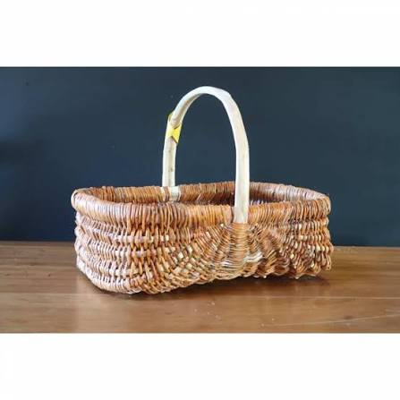

Vannerie
de châtaignier


⟹ Tressage traditionnel du châtaignier ⟸
Le Périgord compte parmi les grandes régions françaises de la châtaigneraie, un arbre longtemps surnommé « l'arbre à pain » tant il a nourri les populations rurales. De son bois souple et fendable est née une tradition vannière ancienne, pratiquée dans les fermes durant les mois d'hiver.
Contrairement à l'osier, plus fin, le châtaignier se travaille en éclisses fendues à la main dans le sens du fil du bois, ce qui donne aux paniers périgourdins leur solidité et leur aspect plus rustique et anguleux.

Longtemps indispensable aux travaux agricoles — vendanges, ramassage des châtaignes, transport des récoltes — cette vannerie utilitaire est aujourd'hui préservée par quelques vanniers qui perpétuent des gestes proches de ceux pratiqués il y a plusieurs siècles.
Quelques vanniers du Périgord perpétuent encore ce savoir-faire, souvent visibles lors de démonstrations organisées à l'occasion de fêtes ou de marchés artisanaux.
Marchés paysans et fêtes de la châtaigne : temps forts de l'automne où sont vendus paniers et objets tressés à la main.
Écomusées du Périgord : plusieurs conservent des collections d'outils et de paniers témoignant de cette tradition rurale.
Ateliers de démonstration proposés ponctuellement par des associations de sauvegarde des savoir-faire traditionnels.
Les démonstrations de vannerie ont souvent lieu en extérieur lors de marchés ou de fêtes locales ; se renseigner auprès des offices de tourisme pour connaître les dates.
Meilleure période : l'automne, saison des châtaignes, où de nombreuses animations mettent ce savoir-faire à l'honneur.
À noter : un panier en châtaignier bien fendu se reconnaît à la régularité de ses éclisses et à la solidité de son tressage.